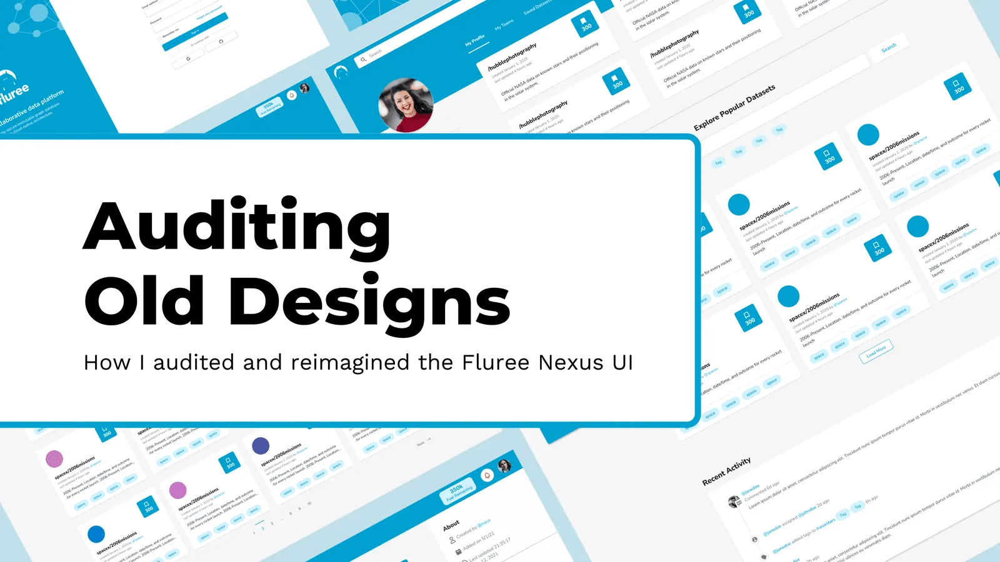
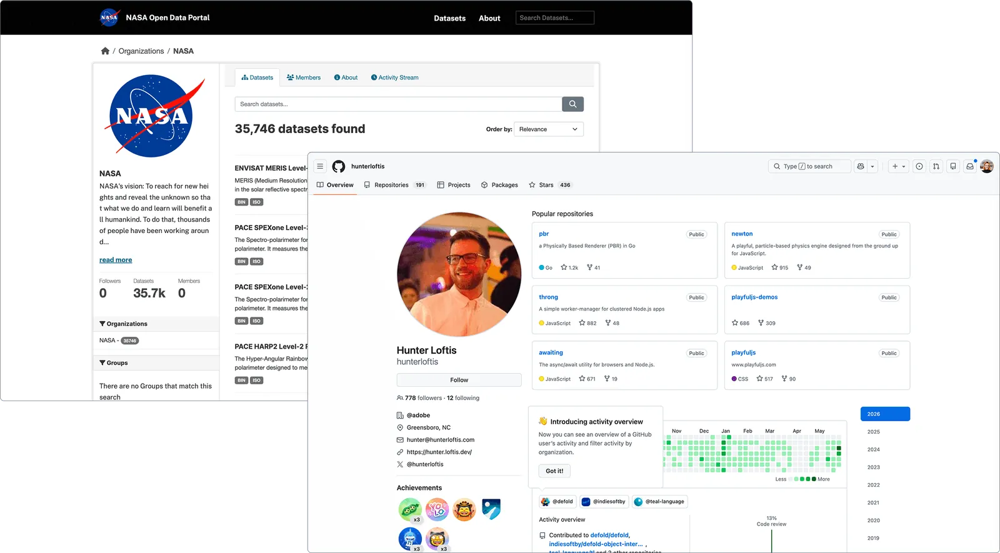
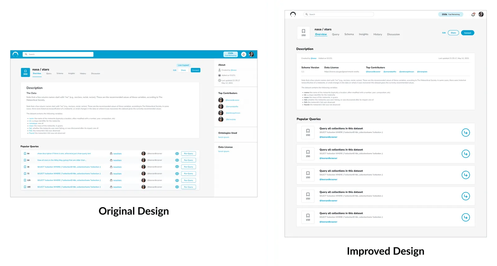
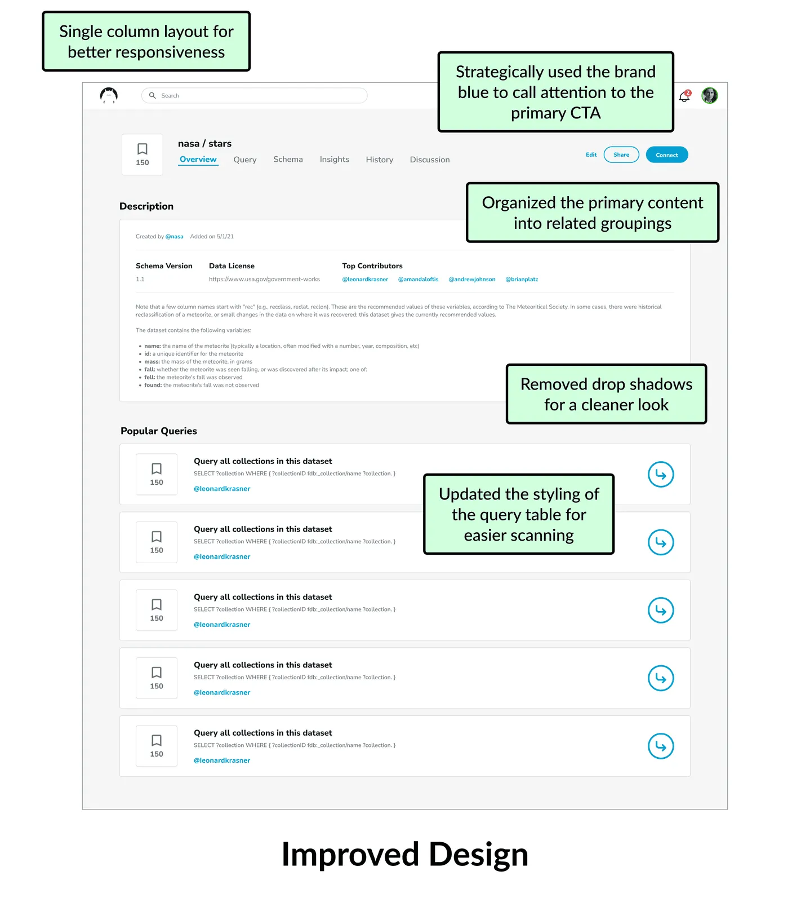
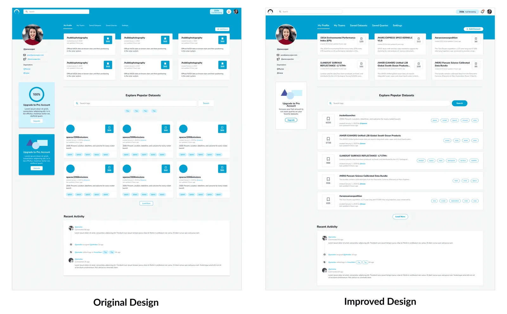
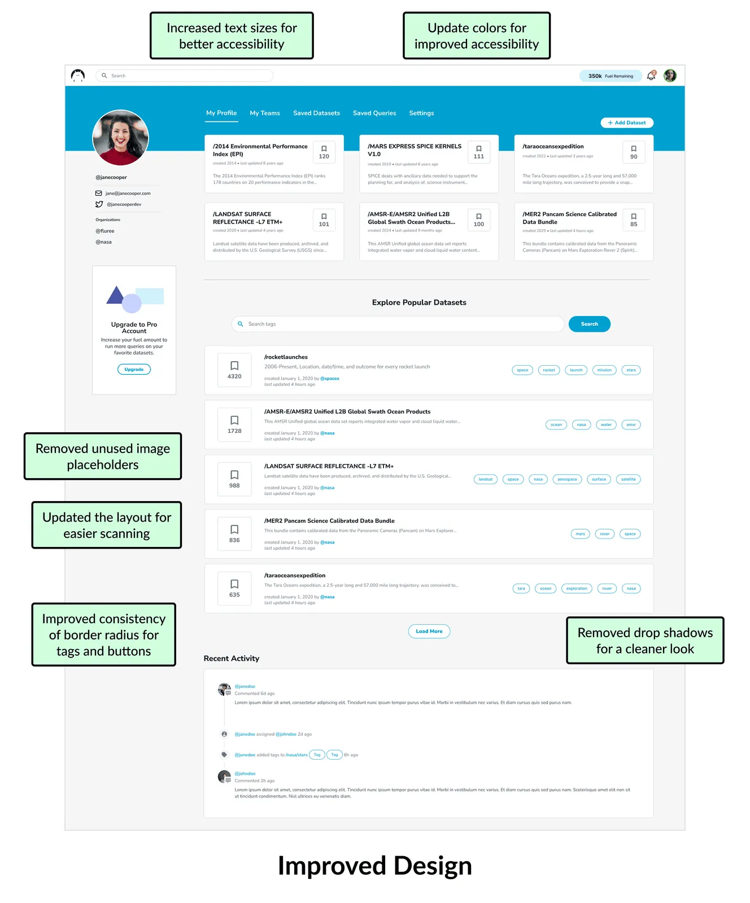

Auditing Old Designs
It’s been about 5 years since I designed the original consumer-facing UI for Fluree’s data platform, Nexus, so I thought it would be a fun exercise to review the designs and discuss what I would do differently today.

Background
Fluree’s initial offerings were limited to developers who wanted to host their own blockchain-backed database and who could query it using SQL. The goal of this project was to quickly stand up a web app that users who had either a deep or limited understanding of running queries could use to search datasets. We partnered with several organizations to seed the database and used a custom schema to standardize the data for easy querying using Fluree’s technology. With a short amount of time to launch and only a small team available to build the app, I designed Fluree’s first consumer-facing app, Nexus.
Looking back, there are plenty of things I would do differently if I were designing this app today, but there are also a handful of decisions I stand by and would recommend to other designers looking to create a similar product.
Things I Would Keep the Same
Utilizing an existing design system
For this project, I used Tailwind CSS, which our engineers were already familiar with. I strongly recommend leveraging a design system such as Material or Tailwind for most greenfield design projects. They’re quick to set up, easy to customize, include more than you need to get started, and are often accessible and WCAG-compliant out-of-the-box. This saves both you and your engineers a ton of time and lets you all focus on product-specific decisions instead of setting up custom components.
Following familiar design patterns
Since we knew our users were primarily engineers and data analysts, we wanted to emulate tools our user base were already familiar with, such as Github and Jupyter Notebook. You can see this inspiration on the main Profile pages and the way navigation is styled throughout the app.

Keeping a minimal aesthetic
When I was initially researching our competitors, I realized that many of their UIs were difficult to navigate and utilitarian in design. Since our content was data-heavy and highly technical, I hypothesized that a minimal and streamlined UI would help to set us apart and reduce friction for adoption.
Areas I Would Improve
Limiting brand colors
Fluree’s brand colors played a huge role in the styling of the UI which, looking back, was unnecessary and a bit distracting. Now, I would limit the use of brand colors to design-only features, illustrations, and graphics and choose a more accessible palette for the UI. By over-utilizing the primary blue color, the user is overwhelmed by what to focus on, so I would restrict the blue to only main CTAs or important user actions.
Remove repeated elements
Typically, if you’re having to repeat UI elements often on the same page, it’s a sign that things could be streamlined. For example, each row in the Popular table has view icons and a “Run Query” CTA which looks cluttered. Today, I would explore a minimal arrow icon that would open a preview modal where a user could also choose to run the query.


Remove unnecessary elements
We found that users rarely uploaded an image to represent their organization or their datasets, yet the UI displayed a placeholder image across the app. By removing this element, we could clear up more space for additional information, a longer description, or simply more breathing room.
Leverage libraries when needed
One area we spent a lot of time designing and iterating on was the discussion board feature. The engineering team spent several sprints building custom forum tooling after I spent significant time designing its precise layout. In hindsight, we could have pulled in a 3rd party tool or library to handle all of the forum features and simply styled it to match our app.


Conclusion
It’s always tough to critique your own work, especially years later, but the exercise is something I push myself to do often so I can reevaluate my design decisions and see which ones actually stood the test of time. The point of these design audits isn’t to completely rip apart your work, but rather to realize that there is always room to learn and improve. While there are many more things I would do differently if I were designing this app today, I appreciate the context I was working within at the time and the unique constraints that led to what myself and the team built.